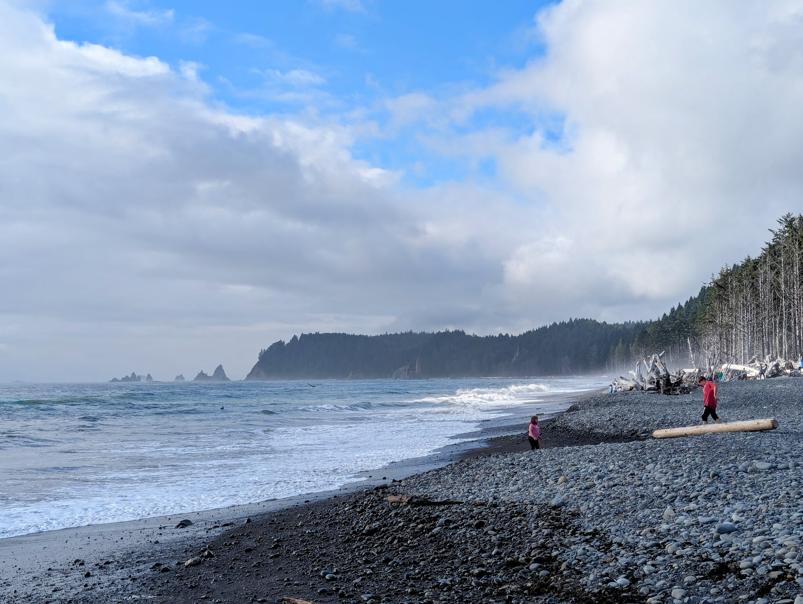

Life Beyond Research
Outside my lab, I like to touch some grass, see some people and feel the nature. Life is Fun !!!!
Photography

Rialto Beach, Olympic National Park, WA (August 2025)
Mt. Washington Hotel, Bretton Woods, NH (July 2025)
Hagia Sophia in Istanbul (December 2024)
Travel
Reading Corner
Books have always been my refuge. Here are some recent reads that left an impression:
- Klara and the Sun by Kazuo Ishiguro - A poignant exploration of artificial intelligence and what it means to be human.
- The Overstory by Richard Powers - Changed how I think about trees and our relationship with the natural world.
- The Code Breaker by Walter Isaacson - A fascinating dive into CRISPR, gene editing, and the scientists behind these advancements.
- Sapiens by Yuval Noah Harari - A thought-provoking journey through human history.